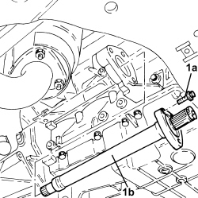
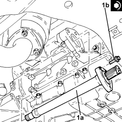

2710A31 INTERMEDIATE DRIVESHAFT - R R
- Path
- Procedures > 27 AXLE > 2710 FRONT AXLE > 2710A DRIVESHAFTS AND JOINTS > 2710A31 INTERMEDIATE DRIVESHAFT - R R
- Kind
- repair procedure (removal / refitting; the operation number is the code)
- Applies to
- engines: 2.2, 1.9 JTD 8v, 1.9 JTD 16v, 2.4 JTD 20v; all production periods
- Interactive page
- https://sloeber94.github.io/elrnDB-fCrm/en/#/194002552
Applies to: engines: 1.9 JTD 8v, 1.9 JTD 16v, 2.4 JTD 20v; all production periods
 Removing
Removing
 Refitting
Refitting- Position the vehicle on a lift.
Op. 4450B04 RIGHT FRONT WHEEL - R.R
Op. 2710A14 RIGHT HAND DRIVE SHAFT WITH JOINTS - R+R
- Position the front driveshaft in a vice fitted with protective jaws.
- Remove the bands securing the protective boot using a suitable tool.
- Turn the boot upsidedown to uncover the three-lobe joint.
- Using a suitable drift and hammer, disconnect the intermediate driveshaft from the front driveshaft.
Applies to: engines: 1.9 JTD 8v, 1.9 JTD 16v, 2.4 JTD 20v; all production periods
Refitting
Removing- Fill the joint and the boot with the specified grease.
Component | Type | Description | Classification | Qty. | Validity |
|---|---|---|---|---|---|
FRONT DRIVESHAFT DIFFERENTIAL SIDE CONSTANT VELOCITY JOINT | Grease (g) | TUTELA MRM ZERO | NLGI 0 | 140 ± 10 | 1.9 JTD 8V 1.9 JTD 16V 2.4 JTD 20V |
- Using a suitable drift, fit the intermediate driveshaft on the front driveshaft.
- Place the boot back in its housing.
- Fit two new bands securing the boot using a suitable tool.
- Remove the front driveshaft from the vice fitted with protective jaws.
Op. 2710A14 RIGHT HAND DRIVE SHAFT WITH JOINTS - R+R
Op. 4450B04 RIGHT FRONT WHEEL - R.R
- Remove the vehicle from the lift.
Applies to: engines: 2.2; all production periods
Removing
RefittingOp. 2710A10 DRIVESHAFT WITH JOINTS (ONE), L/H OR R/H - R + R
(right side).
1. Unscrew bolts (1a) and remove the intermediate drive shaft (1b).

Applies to: engines: 2.2; all production periods
Refitting
Removing1. Place the intermediate drive shaft (1a) in its housing and secure it tightening the bolts (1b) to the recommended torque.
Component | Fastening | dia | Value (daNm) | Validity |
|---|---|---|---|---|
Intermediate driveshaft | Bolt | M8 | (support side) 2.3 - 2.8 | 2.2 |

Applies to: engines: 2.2; all production periods
Op. 2710A10 DRIVESHAFT WITH JOINTS (ONE), L/H OR R/H - R + R
(right side).
Topics linked from this page (3)
- 2710A10 DRIVESHAFT WITH JOINTS (ONE), L/H OR R/H - R + R
- 2710A14 RIGHT DRIVESHAFT WITH JOINTS AND INTERMEDIATE DRIVESHAFT - R+R
- 4450B04 RIGHT FRONT WHEEL - R.R